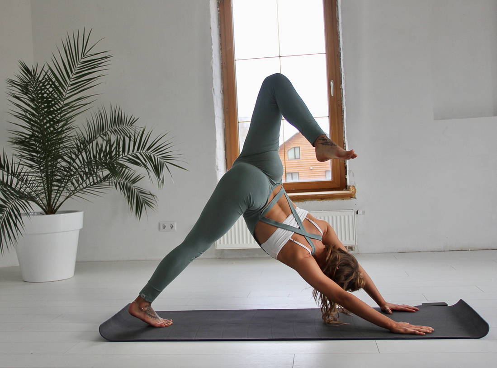
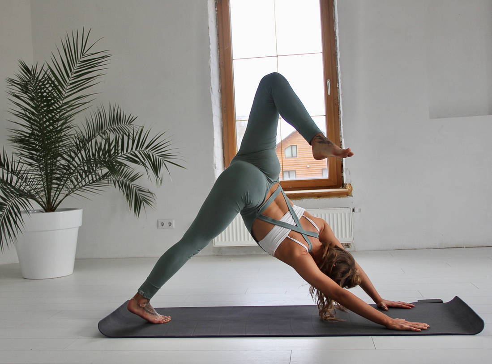

Занятие на Чистых Прудах
1000 рублей

Йога — это очень древняя практика для поиска целостности в занятиях и в жизни. Йога состоит из асан (упражнений), дыхательных техник и медитаций (пассивных и активных), поэтому развивает человека всесторонне — через тело, ум и эмоции. Хотя изначально йога — это духовная практика, в больших городах духовность занимает её малую часть. Многие техники адаптируются под задачи учеников, и акцент делается на работу с телом и дыханием.

Хатха-йога — это разновидность практик, которые объединяют асаны, дыхательные упражнения и концентрацию внимания. «Ха» и «тха» — «солнце» и «луна». Практика хатха-йоги направлена на то, чтобы соединить, объединить или сбалансировать эти две энергии для здоровья ума и тела.

Аштанга йога — динамичная практика, направленная на изучение собственного тела и его возможностей. Это практика погружения в собственное Я. Майсор класс в аштанге — это фактически индивидуальное занятие в группе, где всё пространство выстраивается не вокруг преподавателя, а вокруг ученика.

Йога Айенгара — это форма йоги как упражнения, в которой особое внимание уделяется структурному выравниванию физического тела посредством практики асан . Он отличается от других стилей йоги тремя способами: точностью, последовательностью и использованием реквизита. В каждой асане требуется точность в выравнивании тела.
Коврик

Резинки

Кубики

Утяжелители

Блостер

Вт, чт
Йога, м. Чистые пруды
12:30-14:00

Ср
Йога, м. Люблино
16:00-17:00


Занятие на Чистых Прудах
1000 рублей

Занятие в Люблино
600 рублей

Онлайн занятие
600 рублей
 


По мере освоения базовых асан, вы начнете замечать, как тело становится сильнее и выносливее. Дыхательные практики впустят в вашу жизнь еще больше положительных эмоций, и вы начнете ощущать, что же такое расслабление ума, тела и поддержание равновесия и баланса. Йога поможет вам качественно выполнять поставленные задачи, а они у всех разные.
Здравствуйте, меня зовут Надежда!
Познакомилась с йогой в 2006 году, занималась под началом сильнейших учителей, большинство из которых обучались в Индии,
в той самой восточной стране, где и зародилась традиционная йога. Спустя год мне предложили преподавать и так появились мои первые ученики.